PORTFOLIO
墓石の施工実績
大石石材店がこれまでに手掛けた墓石や改修、合葬墓などの施工事例です（画像をクリックすると拡大表示されます）。

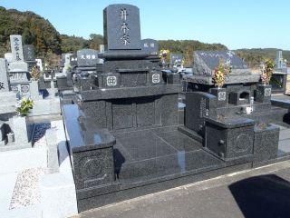


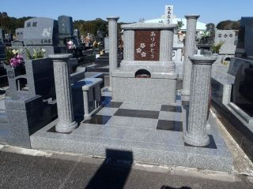
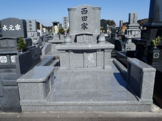


宮崎県知事許可・墓石コンサルタント
伝統の技と真心を込めた墓石の設計・施工から、現代のライフスタイルに寄り添う合葬墓・お墓じまいまで。
大石石材店は、宮崎で世代を超えて愛される安心の墓石をご提案いたします。
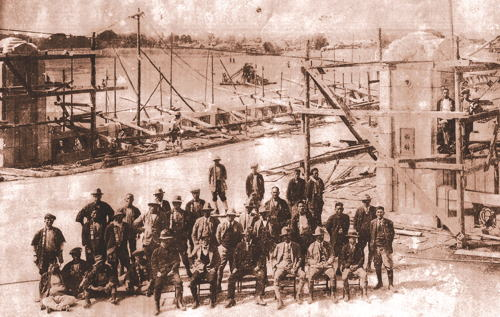
昭和34年の創業以来、石の温もりと耐久性にこだわり続けてまいりました。
墓石は一生に一度あるかないかの大切なお買い物です。私たちは単に石を売るのではなく、ご先祖様を偲び、ご家族が集う大切な「祈りの場」をつくるお手伝いをしています。自社工場での熟練加工と耐震基礎施工により、幾世代にもわたって安心していただけるお墓をご提供いたします。
潮風や雨風に耐える上質な御影石を厳選し、強固な基礎工事を行います。
後継者問題やお墓の移転など、現代の様々なお悩みに親身にお応えします。
花や文字を美しく際立たせる半立体彫刻も自社職人が丁寧にお創りします。
墓石の新設から改修、お墓じまい、特殊彫刻まで、石に関するあらゆるご相談を承ります。
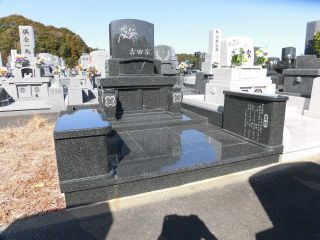
墓石建立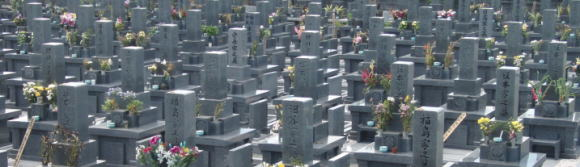
リフォーム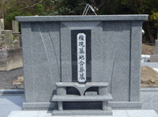
安心の供養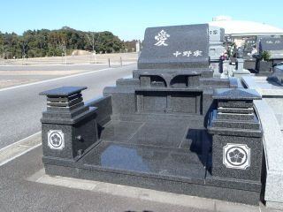
お墓の整理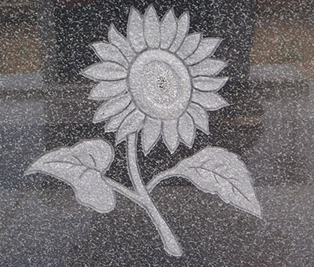
自社制作大石石材店がこれまでに手掛けた墓石や改修、合葬墓などの施工事例です（画像をクリックすると拡大表示されます）。



全国各地で愛される有名彫刻家・田中毅（たなか つよし）氏。石本来の丸みや素朴さを活かし、思わず微笑んでしまう温かみのある作品を生み出しています。
大石石材店では、田中毅氏の石彫作品を展示しております。石の魅力と芸術性を間近でぜひご体感ください。
作品見学について問い合わせる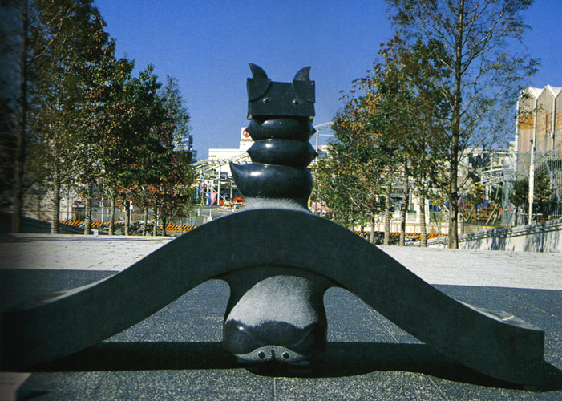
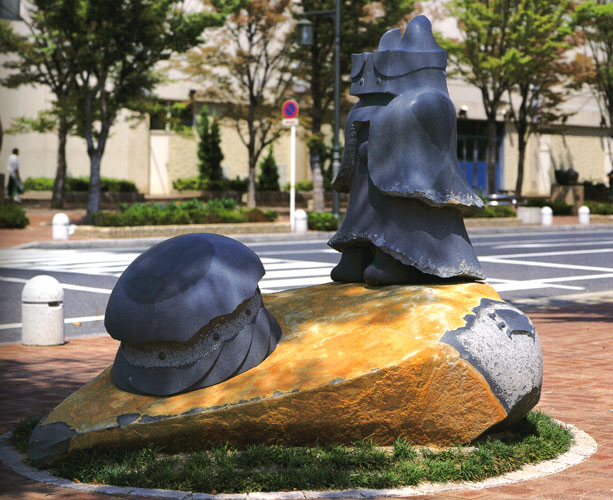
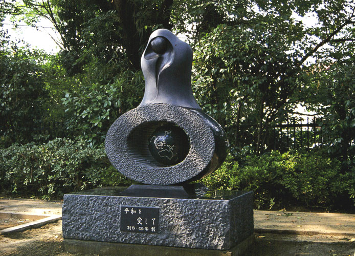
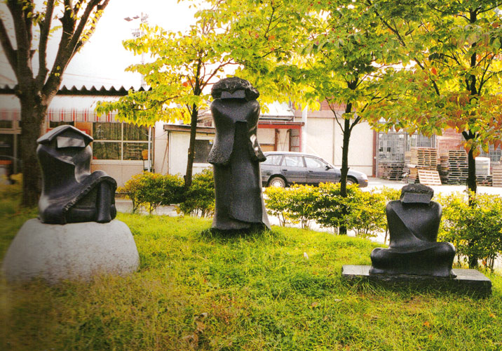
宮崎市内に自社工場と展示場を構えております。お気軽にお立ち寄りください。
| 会社名 | 有限会社 大石石材店 |
|---|---|
| 代表者 | 大石 洋一 |
| 所在地 | 〒880-0211 宮崎県宮崎市佐土原町下那珂3418-1 |
| 電話番号 |
0985-75-6981 FAX: 0985-75-6980 |
| 事業内容 | 墓石販売・施工、墓石改修、合葬墓、モニュメント、お墓じまい、石材加工全般 |
| 許認可 | 宮崎県知事許可・墓石コンサルタント |
| 展示場名 | 大石石材店 展示場 |
|---|---|
| 所在地 | 〒880-0122 宮崎県宮崎市塩路浜之元2794-27 （フェニックス自然動物園・シーガイア近く） |
| 電話番号 | 0985-39-8117 |
| 展示内容 | 和型墓石、洋型墓石、デザイン墓石各種、田中毅作品、墓所用品サンプル |
| 見学について | いつでも実物の墓石をご覧いただけます。事前にご連絡いただければ専門コンサルタントが丁寧にご案内いたします。 |
墓石の新設、改修、お墓じまい、彫刻など、どんな小さなお悩みもお気軽にご相談ください。